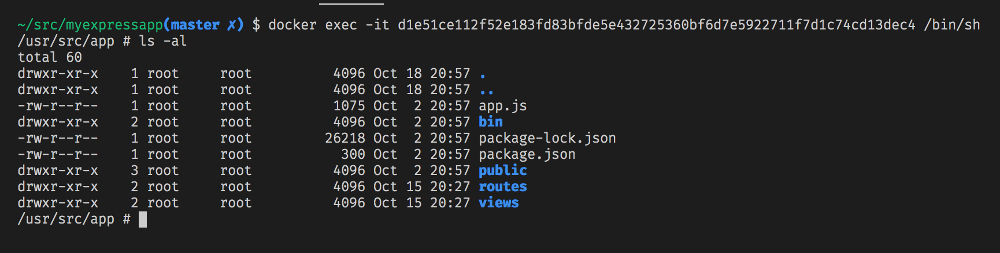
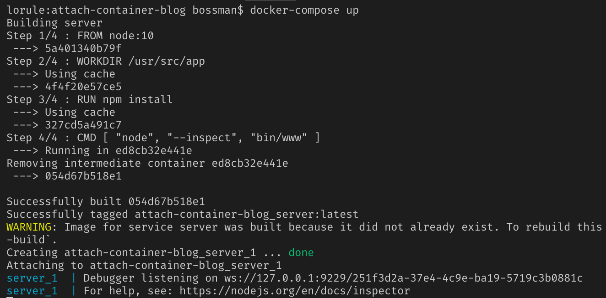
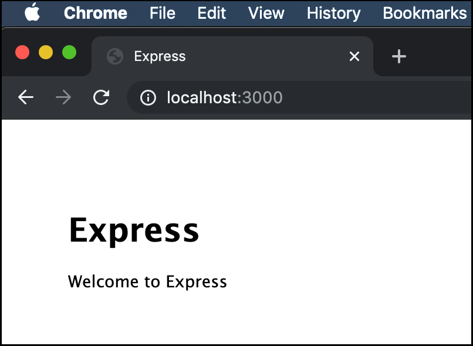

- BLOG POSTS
- Inspecting Containers
- WSL 2
- Remote SSH
- Strict null checking
- Remote Development
- Language Server Index Format
- Rich Code Navigation
- Event-Stream Package Security Update
- Using Azure Pipelines
- GitHub Pull Requests
- New home for Debug Adapter Protocol
- Logpoints and auto-attach
- Live Share Preview
- Settings Search
- Using Azure Pipelines
- Text Buffer Reimplementation
- What's New for Chrome Debugging
- Logpoints and auto-attach
- Connect 2017
- Introducing Live Share
- Settings Search
- Using Azure Pipelines
- Text Buffer Reimplementation
- What's New for Chrome Debugging
- Logpoints and auto-attach
- Connect 2017
- Introducing Live Share
Inspecting Containers with VS Code
October 31, 2019 by Bowden Kelly, @bowdenk7
When developing containerized applications, it is common to try to debug build and runtime issues by attaching a shell to the running container using docker exec --it {containerID} /bin/sh.
This technique allows you to inspect the container environment via the command line, but it doesn't give you a rich set of tools to diagnose issues.

In this post, we'll look at how you can attach Visual Studio Code to your container so that you can use the full power of VS Code, including debugging, to inspect the container, figure out what is going wrong, and fix it.
The Remote - Containers extension, which launched in May of this year, allows you to connect your local VS Code to a container host while maintaining all of your personalized settings, themes, and key bindings.
Prerequisites
This blog post presumes you have Docker Desktop and Visual Studio Code installed. You will also need the Remote - Containers extension. To install the Remote - Containers extension, open the Extensions view (Ctrl+Shift+X), search for "Remote Containers", select Install, and restart VS Code if prompted
The application
The first thing we need is an application that we can run in a container. If you've got one, great! You can skip this step. If not, you can clone this simple Node.js Express application. Note: You do not need Node.js installed locally, we will run this application in the container! git clone https://github.com/microsoft/vscode-express-sample.git This application has a simple Dockerfile that is based off the Node 10 image, as well as a docker-compose.yml file that we will use to run the image, expose the appropriate ports, and map in the local file system. We are running Node with the –inspect flag so that we can debug the app as we would when running locally. In a real application, you would probably want a separate Docker Compose file for your production deployment. Note: You don't need a Docker Compose file, you can also attach to containers created with a single DockerfileBuild and run
To build and run the application, we'll first install the dependencies and then run docker-compose up from the terminal/command prompt. This will download the Node base image, copy over dependencies, and start the container: docker-compose up  If everything worked, you should see output like this:  And, you should be able to navigate to http://localhost:3000 and see the following:
Attach to the container
We can now use the Remote - Containers extension to attach to our running container, inspect the environment, and debug the application. Select the Remote Explorer in the Activity Bar to see a list of running containers that you can attach to in the Other Containers section. Find the container we just started, it has the name 'express_server_1', and then attach to it by using the Connect to Container button. That container should now be displayed in the Attached Containers section of the Remote Explorer. This will launch a new VS Code window (instance) that has the following notification in the bottom right. During this time, VS Code is installing an instance of the VS Code Server inside the container where your app is running. To see more details and progress about this installation step, you can select the details link that is shown in the notification. Once the VS Code server is installed, your local VS Code client will connect to the remote VS Code server. The result is your local instance of VS Code, with all your settings, themes, and key bindings, is connected to a "back-end" running inside the container alongside your application.
Debug inside the container
To further show how similar the remote container is to a local environment, let's attach a debugger. We started our Node app with the –inspect parameter in docker-compose.yaml, so all we have to do is attach a debugger to that process. In the Command Palette (Ctrl+Shift+P), search for and select Debug: Attach to Node Process. There will probably be several Node processes running inside the container. We want the process that is running our application, so select the one that shows bin/www.s Next, open index.js and place a breakpoint on line 6 by clicking on the gutter or pressing F9 on: res.render('index', { title: 'Express' }); Now go to http://localhost:3000 in your browser and see the breakpoint trigger as expected
Install extensions
Just like a normal instance of VS Code, you can install and use extensions while attached to a remote container. Depending on the type of extension, it can either run on the client side or in the container on the remote VS Code server. Extensions that are primarily UI-based such as themes and snippets stay on the client side, while all other extensions are installed in the container. This allows you to have only the extensions you need when working in each environment while maintaining a consist UI across all environments. If you open the Extensions view (Ctrl+Shift+X), you will see the list of extensions that you have installed locally and extensions you have installed in your current container instance. Locally installed extensions that need to be installed in the container (like the Azure Account extension below) will appear grayed out.